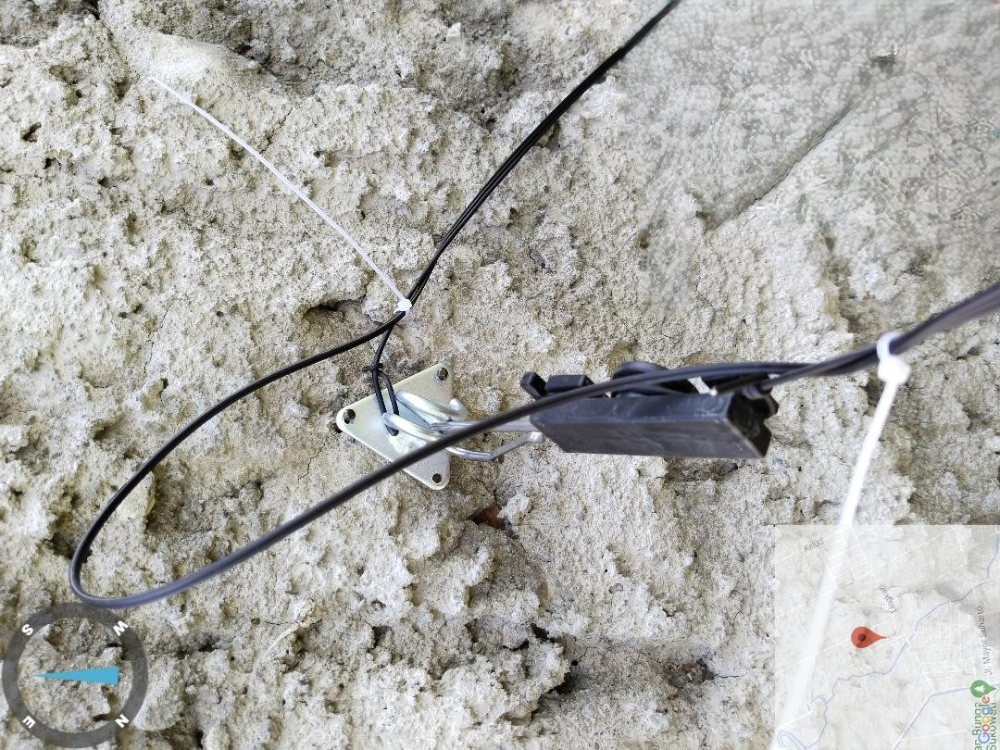

IndiHome fiber infrastructure; the project detects failed installations from field photos.
Problem
Telkom's IndiHome technicians upload photos as proof of internet installation, but many are failed or non-compliant installations. Manually checking every photo is time-consuming and error-prone. This project used deep learning to automatically detect failed installations from the images.
My Contribution
- Exploration: studied the dataset of technician photos to understand what defines a failed installation.
- Model development: designed a deep learning image classifier to flag failed installations automatically.
- Iterative improvement: went through several rounds of model adjustments to balance precision and recall on the real Telkom dataset.
- Collaboration: coordinated with the supervisor and the wider team to align the detection criteria with business needs.
Results
- Delivered an automatic detection model that significantly cut manual inspection time.
- Improved classification reliability through repeated iterations and feedback.
- Gained hands-on experience applying deep learning to industrial photo datasets.
Key Learnings
- Real-world data is messy; cleaning and labelling strategies make or break the model.
- Precision-recall trade-offs must be tuned to the actual business context, not just accuracy.
- Rapid iteration with stakeholder feedback is the fastest path to a usable solution.
"Every failed installation photo was a lesson in how attention to detail drives intelligent systems."